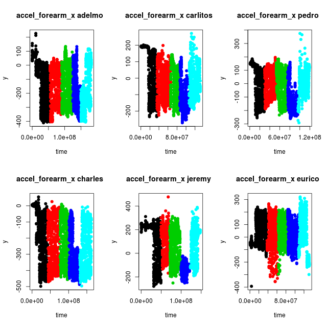
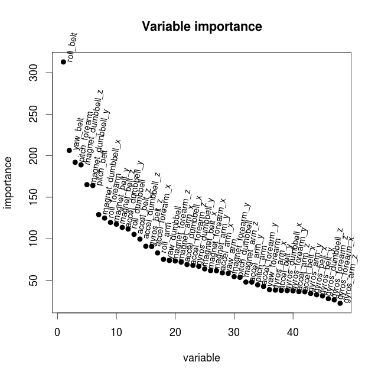
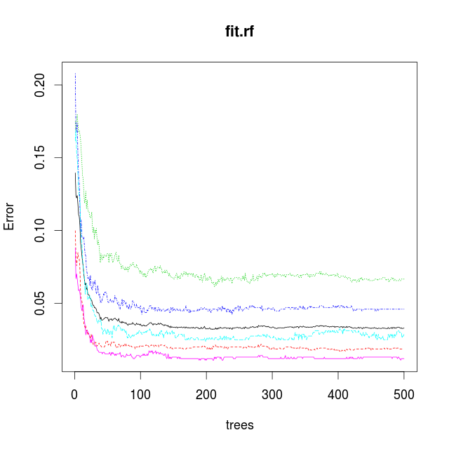

pml-writeup
Coursera, Practical Machine Learning - December 2014, Writeup
Background
This is a Prediction Assignment Writeup for the Coursera course Practical Machine Learning, December 2014. The Goal is to build a model that can be used to identify correct or incorrect ways to do exercise based on body sensor data. The data being used comes from the Human Activity Recognition Weight Lifting Exercises Dataset where output from differens body sensors have been collected.
The original sensor data has been split into a training data set and test data set for this assignment and have been made available for download as pml-training.csv and pml-testing.csv files.
There were six persons participating in the collection of the sensor data and while doing barbell lifts in five different ways. The way they did the exercise was categorized and noted in the "classe" variable. So this is the variable the model being built has to predict.
Initial Data Analysis
The training and test data sets were downloaded to local storage and read into variables. The training set being quite large containing 19622 rows with 160 variables, and some of them having empty or NA values.
> setwd("/home/tamas/workspace/testR")
> training <- read.csv("data/pml-training.csv",TRUE,",")
> testing <- read.csv("data/pml-testing.csv",TRUE,",")
> dim(training)
[1] 19622 160
> dim(testing)
[1] 20 160
> head(training)
X user_name raw_timestamp_part_1 raw_timestamp_part_2 cvtd_timestamp
1 1 carlitos 1323084231 788290 05/12/2011 11:23
2 2 carlitos 1323084231 808298 05/12/2011 11:23
3 3 carlitos 1323084231 820366 05/12/2011 11:23
...
skewness_roll_belt.1 skewness_yaw_belt max_roll_belt max_picth_belt
1 NA NA
2 NA NA
3 NA NA
...
In an effort to visualize what the data look like when the different classes of exercises were made by the different test persons, a couple of functions were defined so that variables could be plotted against time
getData <- function(dataset, name) {
s <- dataset[dataset$user_name %in% c(name),]
return(s)
}
getTime <- function(subdata) {
t0 <- min(subdata$raw_timestamp_part_1)
t <- (subdata$raw_timestamp_part_1 - t0) * 2^20 +
subdata$raw_timestamp_part_2
return(t)
}
plotData <- function(name, sensor, dataset = training) {
subdata <- getData(dataset, name)
time <- getTime(subdata)
family <- as.factor(subdata$classe)
y <- subdata[[sensor]]
plot(time, y, pch=19, col=family, main=paste(sensor, name, " "))
}
plotAll <- function(sensor) {
par(mfrow=c(2,3))
plotData("adelmo", sensor)
plotData("carlitos", sensor)
plotData("pedro", sensor)
plotData("charles", sensor)
plotData("jeremy", sensor)
plotData("eurico", sensor)
}
With the plotAll function different sensors could be examined. Like the sensor variable "accel_forearm_x" for instance.
> png("accel_forearm_x.png",width = 640, height = 640, pointsize = 18)
> plotAll("accel_forearm_x")
> dev.off()

While studying the plots for different sensors a couple of things could be observed.
- For one single class of exercise the sensor output span a broad range of values, since the whole amplitude of the barbell lifts are being detected.
- The sensor values differ more between persons than between different classes
- There might be some misclassification of the data. Compare for instance exercise class "D" (blue) between adelmo, charles and jeremy. It looks like the data for class "D" in fact is situated between the two shades of blue for adelmo and charles, and hence misclassified in the dataset. Similar potential misclassifications can be observed for other sensor variables.
This leads to the conclusion that as many as possible of the sensor variables should be used to be able to find a proper model. Since the Random Forest method can handle many variables while doing classification it was chosen for the model creation.
Model Creation
To be able to create a Random Forests model the NA values has to be removed from the training data. But it turned out not to be enough as some of the variables in the training set are Factor types with to many levels for the Random Forest train functions to manage. Furthermore, some of the variables, like "X", "user_name", "raw_timestamp_part_1" etc are irrelevant for the identification, so eventually except the sought variable "classe" only the sensor variables with proper data were selected.
> training1 <- training[,colSums(is.na(training)) < 1]
> x <- training1[,c("roll_belt", "pitch_belt", "yaw_belt",
"roll_arm", "pitch_arm", "yaw_arm",
"roll_dumbbell", "pitch_dumbbell", "yaw_dumbbell",
"roll_forearm", "pitch_forearm", "yaw_forearm",
"gyros_belt_x", "gyros_belt_y", "gyros_belt_z",
"accel_belt_x", "accel_belt_y", "accel_belt_z",
"magnet_belt_x", "magnet_belt_y", "magnet_belt_z",
"gyros_arm_x", "gyros_arm_y", "gyros_arm_z",
"accel_arm_x", "accel_arm_y", "accel_arm_z",
"magnet_arm_x", "magnet_arm_y", "magnet_arm_z",
"gyros_dumbbell_x", "gyros_dumbbell_y", "gyros_dumbbell_z",
"accel_dumbbell_x", "accel_dumbbell_y", "accel_dumbbell_z",
"magnet_dumbbell_x", "magnet_dumbbell_y", "magnet_dumbbell_z",
"gyros_forearm_x", "gyros_forearm_y", "gyros_forearm_z",
"accel_forearm_x", "accel_forearm_y", "accel_forearm_z",
"magnet_forearm_x", "magnet_forearm_y", "magnet_forearm_z",
"classe")]
Since the run time when doing Random Forest computations can be quite long with large data sets, the data were sampled to get a subset of the data to start with. Before using the train function from the caret library an attempt to use the randomForest function directly were made. This function can be faster since it doesn't do any implicit extra calculations like out of bag cross validation.
> library(randomForest)
> x1 <- x[sample(nrow(x), 500),]
> set.seed(331)
> fit.rf <- randomForest(classe ~ ., data=x1)
> print(fit.rf)
Call:
randomForest(formula = classe ~ ., data = x1)
Type of random forest: classification
Number of trees: 500
No. of variables tried at each split: 6
OOB estimate of error rate: 14.2%
Confusion matrix:
A B C D E class.error
A 142 0 2 5 0 0.04697987
B 11 55 9 4 6 0.35294118
C 3 4 80 2 0 0.10112360
D 2 1 7 64 3 0.16883117
E 2 2 6 2 88 0.12000000
A 14 percent error rate with just 500 samples, not bad considering what the data look like! Now increase the sample size to 5000 and see if the error rate decreases.
> set.seed(331)
> x1 <- x[sample(nrow(x), 5000),]
> fit.rf <- randomForest(classe ~ ., data=x1)
> print(fit.rf)
Call:
randomForest(formula = classe ~ ., data = x1)
Type of random forest: classification
Number of trees: 500
No. of variables tried at each split: 6
OOB estimate of error rate: 2.14%
Confusion matrix:
A B C D E class.error
A 1446 6 2 1 0 0.006185567
B 22 943 11 0 0 0.033811475
C 1 27 818 3 0 0.036513545
D 1 0 25 773 2 0.034956305
E 0 0 1 5 913 0.006528836
It does. The out of band estimation of the error rate is just 2 percent. What about variable importance? Can some of the variables be dropped to keep computation times down? The variable importance can be extracted and plotted as follows.
> imp1 <- data.frame(importance(fit.rf))
> attach(imp1)
> imp2 <- imp1[order(-MeanDecreaseGini), , drop=FALSE]
> detach(imp1)
> head(imp2)
MeanDecreaseGini
roll_belt 312.9281
yaw_belt 206.2780
pitch_forearm 192.0426
magnet_dumbbell_z 188.9785
magnet_dumbbell_y 165.1653
pitch_belt 164.0823
> png("importance500.png",width = 640, height = 640, pointsize = 18)
> ploty <- as.vector(imp2$MeanDecreaseGini)
> plot(ploty, main="Variable importance", xlab="variable", ylab="importance", pch=19)
> text(ploty, row.names(imp2[1]), cex=0.8, pos=4, xpd=TRUE, srt=80)
> dev.off()

Even if there are 5-6 variables which appears to be more important then the others, the decrease in importance is quite slow. But to try to get faster computation times when more samples are being used only the 15 most important variables are picked.
> x <- training1[,c("roll_belt", "pitch_belt", "yaw_belt",
"magnet_dumbbell_x", "magnet_dumbbell_y", "magnet_dumbbell_z",
"pitch_forearm", "roll_forearm",
"magnet_belt_y", "magnet_belt_z",
"accel_dumbbell_y", "accel_dumbbell_z",
"roll_dumbbell", "accel_belt_z", "gyros_belt_z",
"classe")]
By using this reduced set of variables how much out of bag accuracy have we lost? Make a new computation with the reduced set of variables.
> set.seed(331)
> x1 <- x[sample(nrow(x), 5000),]
> fit.rf <- randomForest(classe ~ ., data=x1)
> print(fit.rf)
Call:
randomForest(formula = classe ~ ., data = x1)
Type of random forest: classification
Number of trees: 500
No. of variables tried at each split: 3
OOB estimate of error rate: 3.3%
Confusion matrix:
A B C D E class.error
A 1428 17 7 2 1 0.01855670
B 28 911 23 13 1 0.06659836
C 2 22 810 15 0 0.04593640
D 5 2 14 778 2 0.02871411
E 0 2 3 6 908 0.01196953
The estimated error rate increased as expected. Now take a look at the plot from the model describing de estimated error rates with respect to the number of trees in the forest.
png("trees5000_15.png",width = 640, height = 640, pointsize = 18)
plot(fit.rf)
dev.off()

The plot show a knee at 50 trees. After that the model only improves slightly by using more trees. By only using 50 trees the computation time can be reduced so that more samples can be used in an attempt to reduce the error rate.
Model Validation
With this reduced set of variables split the traning data into one set for training and one for validation of the obtained model. Set the number of trees to 50 to start with.
> trainSampl <- sample(nrow(x), 0.80 * dim(x)[1] )
> x1 <- x[trainSampl,]
> v1 <- x[-trainSampl,]
> fit.rf <- randomForest(classe ~ ., data=x1, ntree = 50)
> print(fit.rf)
Call:
randomForest(formula = classe ~ ., data = x1, ntree = 50)
Type of random forest: classification
Number of trees: 50
No. of variables tried at each split: 3
OOB estimate of error rate: 1.47%
Confusion matrix:
A B C D E class.error
A 4400 17 7 5 1 0.006772009
B 27 2974 28 13 0 0.022353715
C 4 32 2662 23 0 0.021683205
D 1 4 41 2550 4 0.019230769
E 1 5 5 12 2881 0.007920110
Not too bad. Now let us use the model and do a prediction of the "classe" variable using the validation data and see how good the model are at predicting.
> val1 <- predict(fit.rf,v1)
> table(val1,v1$classe)
val1 A B C D E
A 1144 6 1 0 0
B 4 734 4 0 1
C 2 11 690 4 1
D 0 4 6 612 1
E 0 0 0 0 700
Very good, and the model can still be improoved by using more variables and growing the forest larger.
Now try to use the train function from the caret package to fit a Random Forest model. Are the results comparable?
> library(caret)
> set.seed(331)
> tc <- trainControl(method="cv", number=2)
> fit.rf <- train(classe ~., data=x1, method="rf", trControl=tc, ntree=50)
> print(fit.rf)
Random Forest
15697 samples
15 predictors
5 classes: 'A', 'B', 'C', 'D', 'E'
No pre-processing
Resampling: Cross-Validated (2 fold)
Summary of sample sizes: 7848, 7849
Resampling results across tuning parameters:
mtry Accuracy Kappa Accuracy SD Kappa SD
2 0.9746449 0.9679496 0.0019797949 0.0024920589
8 0.9752819 0.9687570 0.0008987182 0.0011228587
15 0.9708861 0.9632016 0.0006332846 0.0008190101
Accuracy was used to select the optimal model using the largest value.
The final value used for the model was mtry = 8.
> confusionMatrix(fit.rf)
Cross-Validated (2 fold) Confusion Matrix
(entries are percentages of table totals)
Reference
Prediction A B C D E
A 27.8 0.4 0.0 0.0 0.0
B 0.2 18.5 0.2 0.1 0.1
C 0.1 0.3 16.9 0.3 0.1
D 0.0 0.2 0.2 16.1 0.1
E 0.0 0.0 0.0 0.1 18.2
> val1 <- predict(fit.rf,v1)
> table(val1,v1$classe)
val1 A B C D E
A 1144 10 1 0 0
B 4 731 2 2 2
C 2 13 691 6 2
D 0 1 7 608 0
E 0 0 0 0 699
The two packages produces comparable results.
Testing
Even if the models could be improved by using more variables or buildning more trees, the current model was able to make a correct prediction of the "classe" variable from the test set.
> testing <- read.csv("data/pml-testing.csv",TRUE,",")
> pred1 <- predict(fit.rf,testing)
> as.vector(pred1)
[1] "B" "A" "B" "A" "A" "E" "D" "B" "A" "A" "B" "C" "B" "A" "E" "E" "A" "B" "B"
[20] "B"
The results were submitted by uploading the created result files following the instructions and were graded all correct.
Great success!
Out of curiosity how much the model could be improved the data to use for training were reverted to use all (48) relevant sensor variables and to create a Random Forest model with all the available traning samples (80 percent traning and 20 percent validation) and 150 trees. This improved the error rate to 0.5 percent and the prediction rate was quite good.
> val1 <- predict(fit.rf,v1)
> table(val1,v1$classe)
val1 A B C D E
A 1091 3 0 0 0
B 0 741 6 0 0
C 0 0 672 2 0
D 0 0 1 648 0
E 1 0 0 0 760
Tamas Szabo
Vall, Gotland
19 December 2014